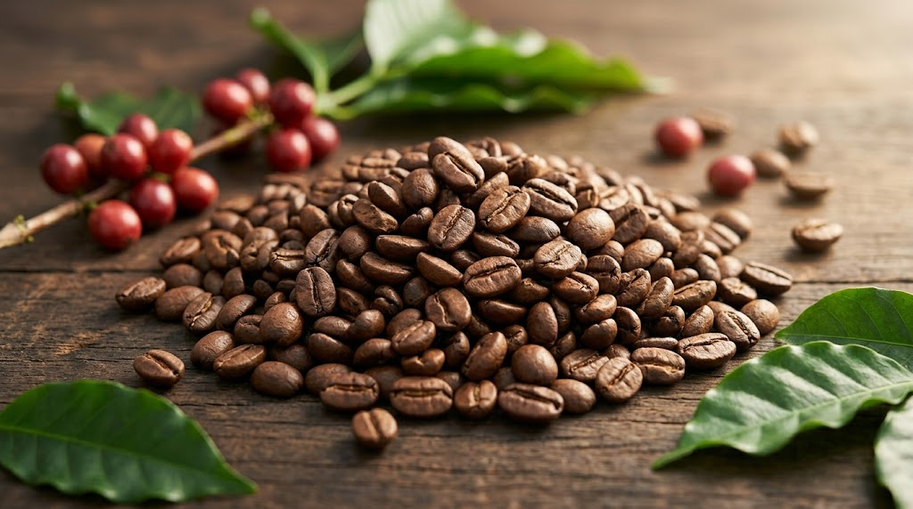
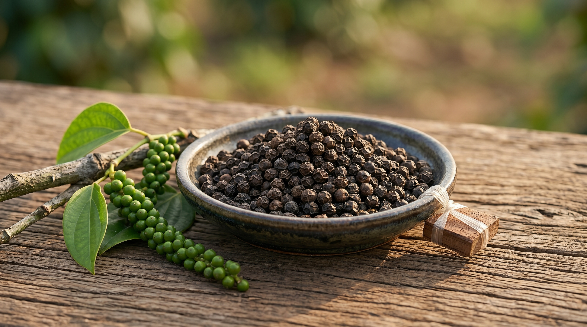
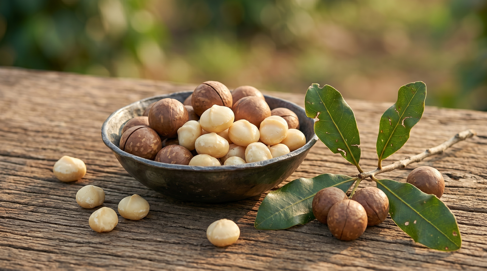

Vietnam Sustainable Agriculture Platform
Cultivating Sustainability. Empowering Farmers. Delivering Traceable Quality.
Building sustainable, traceable, and certified agricultural supply chains across Vietnam while improving farmer livelihoods and connecting communities to global markets.

Internal Control System
0%
Designed for transparent farm records, certification readiness, and supply chain confidence.
About Green Santara
About Green Santara JSC
Green Santara JSC is a Vietnam-based agricultural Joint Stock Company dedicated to developing sustainable, traceable, and certified agricultural supply chains. Working closely with farmers, cooperatives, and international partners, Green Santara promotes environmentally responsible farming practices while improving farmer livelihoods and market access.
Our mission is to create long-term value for farming communities through organic agriculture, sustainability programs, climate-smart farming, and transparent supply chains.
Through our Internal Control System (ICS), digital traceability platforms, farmer training programs, and certification initiatives, we help farmers meet international standards and connect directly with global markets.
Vision
Our Vision
To become a leading sustainable agriculture platform in Vietnam, delivering premium agricultural products while protecting nature, supporting rural communities, and promoting responsible farming.
Our Mission
Promote sustainable and organic agriculture.
Improve farmer incomes through premium markets.
Protect soil, water, forests, and biodiversity.
Develop fully traceable agricultural supply chains.
Deliver high-quality agricultural products to international customers.
Sustainability Projects
Sustainability Projects
Green Santara works with farmers, cooperatives, and communities to implement sustainability programs focused on:
Organic Agriculture Development
Supporting farmers in adopting organic farming methods that improve soil health, reduce chemical dependency, and protect ecosystems.
Farmer Capacity Building
Regular training programs on:
- Organic farming
- Climate-smart agriculture
- Harvest and post-harvest management
- Traceability and record keeping
Digital Traceability
Using HubTrace and digital farm mapping systems to ensure complete farm-to-customer traceability.
Climate and Biodiversity Protection
- Soil conservation programs
- Water resource protection
- Agroforestry systems
- Carbon-friendly farming practices
Community Development
Supporting rural communities through:
- Farmer organizations
- Cooperative development
- Training and awareness programs
- Access to international certification programs
Products
Our Products
Coffee, black pepper, and macadamia programs designed around quality, certification compliance, and farm-level transparency.

Coffee
Coffee
Vietnam is one of the world's leading coffee-producing countries, and Green Santara works closely with coffee farmers to produce high-quality, traceable, and sustainable coffee.
Products
- Robusta Green Coffee Beans
- Arabica Green Coffee Beans
- Organic Coffee
- EUDR Coffee
- Specialty Coffee
- Fairtrade Coffee
- Sustainable Coffee Programs
Quality Focus
- Farm traceability
- Careful harvesting
- Quality grading
- Sustainable processing
- International certification compliance

Black Pepper
Black Pepper
Green Santara sources premium Vietnamese black pepper from carefully selected farmer groups committed to sustainable agricultural practices.
Products
- Black Pepper Whole
- Organic Black Pepper
- Steam Sterilized Black Pepper
- Black Pepper Powder
Features
- High piperine content
- Traceable supply chain
- Sustainable production
- International quality standards

Macadamia
Macadamia
Green Santara collaborates with farmers in the Central Highlands of Vietnam to develop premium macadamia production systems that support long-term sustainability and farmer prosperity.
Products
- Macadamia Nuts in Shell
- Kernel Grade Macadamia
- Premium Export Quality Macadamia
Benefits
- Carefully selected farms
- Sustainable cultivation practices
- Full traceability
- Premium quality standards
Why Green Santara
Why Green Santara?
Green Santara connects field-level practices with buyer-ready assurance, helping rural communities and global partners grow from the same foundation of trust.
Sustainable Agriculture Programs
Organic and International Certifications
Farmer-Centric Development
Full Traceability Solutions
Strong Cooperative Partnerships
Environmental Responsibility
Reliable Supply Chain Management
Long-Term International Market Access
Traceability & Impact
From Farmer to Global Market
An integrated pathway that links training, certification, digital traceability, export readiness, and premium market access.
Internal Control System (ICS)
Field-level control points for farmer records, audit readiness, and certification consistency.
Digital Traceability
Farm mapping and transaction records that help products remain visible through the chain.
Sustainable Farming
Soil, water, agroforestry, and biodiversity practices embedded into program design.
Premium Market Access
Commercial pathways that reward better practices and support farmer livelihoods.
Partnership
Growing Together for a Sustainable Future
Partner with Green Santara JSC to build transparent, sustainable, and globally connected agricultural supply chains.
Contact
Contact Us
Connect with Green Santara JSC for product sourcing, farmer partnerships, certification programs, and long-term supply chain collaboration.
GREEN SANTARA JSC